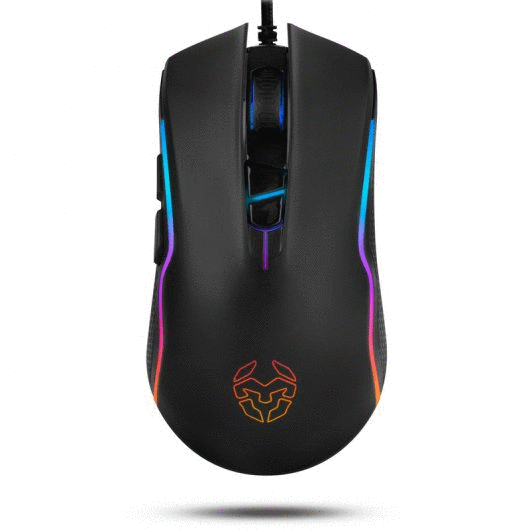
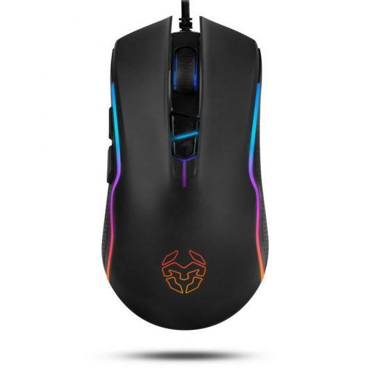
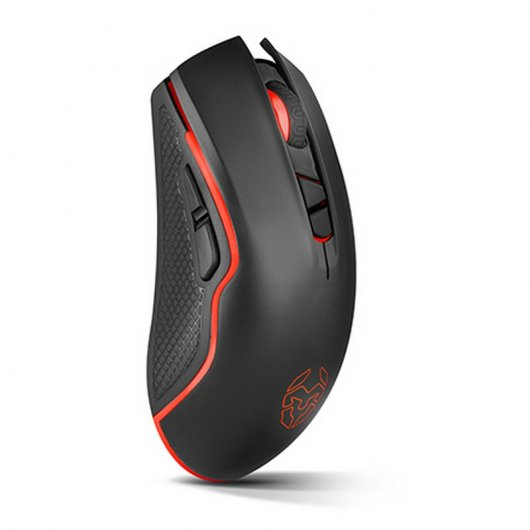
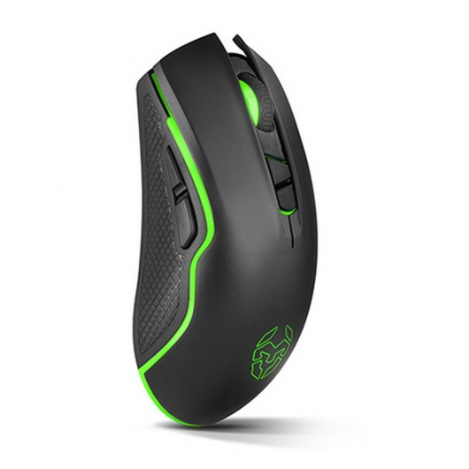

FUTURETECH STORE |
|     |
Krom Kahn
29,99€
Kahn es el ratón gaming de Krom para quienes demandan una precisión excepcional en cada movimiento. Con un agarre perfecto, un preciso sensor óptico PixArt PMW 3325 y 5 niveles de DPI configurables, podrás potenciar su rendimiento y tu experiencia de uso gracias a su completa iluminación RGB y a las opciones de personalización incluidas en su completo software de configuración.
Características
Diseño y acabados: Kahn posee un diseño ambidiestro con tacto rubber en sus laterales que se adapta perfectamente tanto a usuarios zurdos como diestros, a través de un agarre cómodo y firme que, en combinación con la estabilidad de su sólida estructura interna, permite ejecutar solo movimientos de alta precisión.
Desde su potente software, podrás aumentar las posibilidades de los 7 botones configurables de Kahn (dos en el lateral izquierdo, más los de scroll y DPI, junto a los dos principales que cuentan con tecnología Omron), creando y asignando macros y atajos de teclado.
Gran precisión: Equipado con el excelente sensor óptico PixArt PMW 3325 (uno de los más precisos del mercado), Kahn posee 5 niveles de DPI configurables vía software entre los que podrás moverte pulsando un botón.
Kahn aumenta todavía más tu ventaja competitiva y las posibilidades de sus niveles DPI mediante su software, desde el que podrás subir la velocidad de su doble click o la precisión del puntero, entre otras funcionalidades.
Iluminación RGB configurable: Kahn posee varios modos y efectos de iluminación LED RGB, que puedes aprovechar asignando un color por cada salto de DPI: de esta forma, podrás reconocer de un simple vistazo cada sensibilidad y aplicar rápidamente la que necesites en cada momento. Además, también es posible asignar a un botón la función de apagar o moverte entre modos de iluminación mediante su avanzado software, desde el que podrás también establecer la velocidad e intensidad de cada uno de los modos.
Software avanzado: Con el completo software que acompaña a Kahn, es posible configurar mucho más que sus efectos de iluminación: podrás crear combo keys, botones de disparo (fire keys) y macros con funciones avanzadas que aumentarán tu efectividad en el juego, pudiendo cargar tus configuraciones más usadas en los 10 perfiles que posee. Además, gracias a su memoria integrada de 16kb, Khan te permitirá moverte entre diferentes ordenadores y sistemas operativos (Windows, Mac, Linux) sin echar de menos tus armas más imprescindibles, disfrutando con su conexión USB chapada en oro de una transferencia de datos ultra rápida.
Especificaciones
Sensor óptico PixArt PMW 3325 de gran precisiónç
Botones principales con switches OMRON
Software programable
5 niveles de DPI (1000 - 4000)
Iluminación RGB configurable
Sensor Óptico · PixArt PMW 3325
Resolución 1000 - 1500 - 2000 - 3000 - 4000 DPI
Botones 7
Memoria Interna 16kb
Perfiles 10
Polling rate 125 - 500 - 1000Hz
Aceleración 20 G
Velocidad 100 inches / sec
Compatibilidad Windows 2000 / 2003 / XP / Vista / 7 / 8 / 10 || Mac
Longitud cable 1.8 m ± 10 cm
Interfaz USB chapado en oro
Dimensiones 127 x 68 x 41 mm
Peso 135 gr
|


{kind=link}
{kind=link}
{kind=link}